§ 01 Fail2Ban: cómo desbanea solo
En la semana 06 armé un detector de SSH brute force que bloqueaba con UFW, pero no desbloqueaba solo. La pregunta era: ¿cómo hace Fail2Ban para banear por tiempo limitado y soltar la IP sin que nadie toque nada? La respuesta me sorprendió: iptables no tiene timeout nativo. Fail2Ban guarda el timestamp del ban en una base SQLite, y un scheduler propio compara cada tanto si now - ban_timestamp > bantime. Cuando se pasa, borra la regla de iptables. El unban no es magia de iptables, es lógica de Fail2Ban.
Comparado con mi script manual, la diferencia de robustez es clara: monitorea en tiempo real con inotify en vez de correr por cron, usa filtros configurables por regex, y persiste el estado.
§ 02 jail.conf vs jail.local — la regla de oro
Acá me comí dos errores seguidos, y los dos enseñaron. Una jail es la regla completa para un servicio: qué log mirar, qué regex, cuántos intentos y cuánto banear. La regla de oro es nunca editar jail.conf: cuando apt upgrade actualiza el paquete lo sobreescribe sin avisar y tus cambios desaparecen. Todo va en jail.local, que Fail2Ban mergea con precedencia.
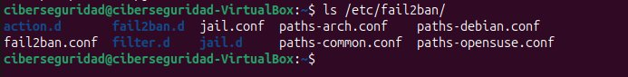
jail.local — la config previa se había hecho sobre jail.conf, el archivo que no hay que tocar.El segundo error fue más sutil: había copiado todo jail.conf dentro de jail.local y agregado [sshd] al final. Fail2Ban no levantó. Lo diagnostiqué corriéndolo en foreground (fail2ban-server -xf start), que muestra el error que no aparece en los logs normales:
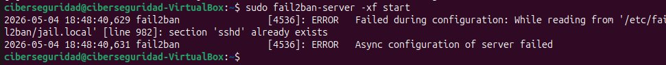
section 'sshd' already exists — line 982. La sección estaba duplicada por copiar todo el archivo.La solución fue tirar todo y dejar un jail.local minimalista, solo con mis decisiones:
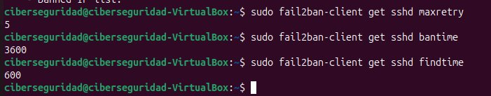
jail.local: maxretry=3, bantime=3600, findtime=600 confirmados.Para ver el ciclo entero puse bantime=60 e ignoreself=false, generé intentos fallidos desde localhost y lo miré pasar en vivo:
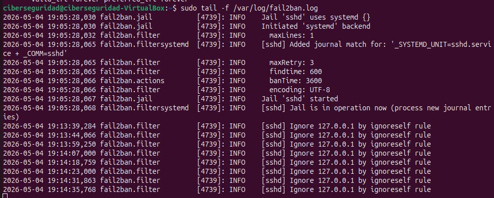
§ 03 Forense de logs web con Apache
Segundo bloque: monté Apache no para servir nada, sino para generar logs reales y atacarlos yo mismo, reproduciendo los escenarios de TryHackMe. El log principal es access.log: una línea por request.
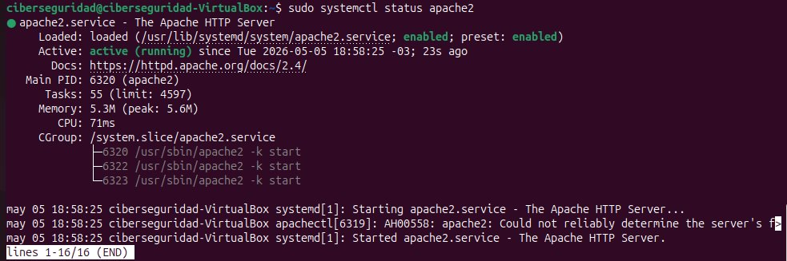
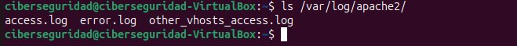
access.log es el que registra cada request HTTP — el que mira un analista.Aprendí a leer la anatomía de una línea: IP del cliente, timestamp, método + ruta + protocolo, status code, bytes, referrer y User-Agent. Ese último campo es el que delata la herramienta que hizo el request.
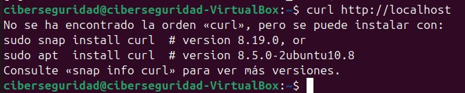
access.log: cada campo cuenta algo. El User-Agent (curl/8.5.0) revela qué programa hizo el request.Los status codes cambian de significado cuando pensás en seguridad: un 200 en /admin es alerta; una ráfaga de 404 es un escaneo de directorios. Y hasta el tamaño en bytes es indicador — un 200 devuelve la página completa, un 404 solo la de error.
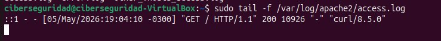
200 devuelve 10926 bytes (página completa); el 404, 432 bytes (solo el error). La diferencia de tamaño también es una firma.§ 04 Simular y detectar un escaneo de directorios
Un atacante no sabe qué rutas existen, así que herramientas como gobuster prueban miles automáticamente. Lo simulé con un loop de curl contra rutas sensibles, y después lo cacé en los logs con cuatro comandos de awk.
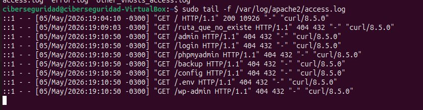
curl corriendo. En los logs deja una firma clara: misma IP, timestamps en el mismo segundo, mayoría de 404, rutas con nombres sensibles.El triaje con awk: extraer un campo → ordenar → contar repetidos → mostrar de mayor a menor. Cuatro variantes cubren casi todo.
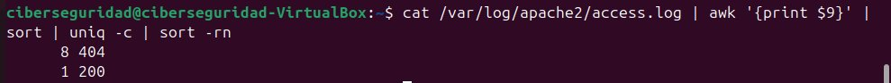
awk. Una mayoría de 404 concentrada en el tiempo grita 'escaneo'.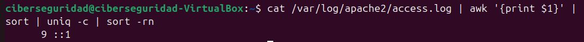
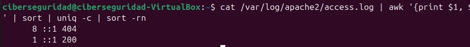
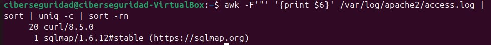
sqlmap, gobuster o nikto acá es alerta inmediata de ataque en curso.§ 05 TryHackMe: primer room completado
Con esa base cerré la sesión haciendo mi primer room: Offensive Security Intro. Lo elegí en inglés a propósito — toda la industria (CVEs, writeups, herramientas, certificaciones) opera en inglés y no tiene sentido re-aprender los términos después.
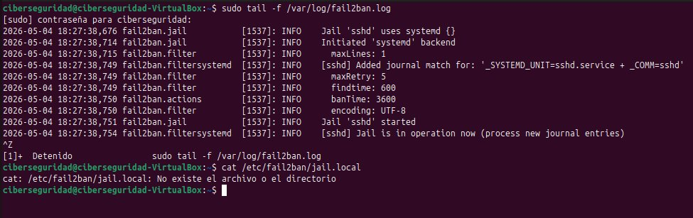
El room me hizo usar dirb para encontrar páginas ocultas en una app bancaria falsa — exactamente lo mismo que había simulado a mano con el loop de curl, pero con una wordlist de miles de rutas. Encontré un panel de administración sin protección y transferí fondos: un IDOR (Insecure Direct Object Reference), una función que debería estar restringida pero está accesible sin autenticación. Flag: BANK-HACKED. Primer hack ético, en un entorno legal y controlado.
§ 06 Lo que no entendía al principio
| Confusión | Cómo lo resolví |
|---|---|
| Cómo hace iptables para desbanear solo por tiempo | No lo hace: Fail2Ban guarda el timestamp en SQLite y un scheduler propio borra la regla |
| Por qué Fail2Ban no levantaba después de editar | Había copiado todo jail.conf en jail.local y quedó [sshd] duplicado — lo vi en foreground |
Por qué un 200 puede ser peor que un 404 | Un 200 en una ruta sensible significa que existe y respondió; el 404 es que no está |
| Qué es un IDOR | Una función restringida que quedó accesible sin autenticación — acceso directo a algo que no debería |
§ 07 Conexión con el mundo profesional
Fail2Ban e iptables son hardening real de cualquier servidor expuesto. El triaje de access.log con awk es pan de cada día en un SOC L1 — detectar escaneos, User-Agents de herramientas ofensivas, ráfagas de errores. Y haber atacado un IDOR de un lado me deja saber qué log mirar del otro. Ese ida y vuelta ataque/defensa es lo que quiero mostrar en el portfolio.
§ 08 Pregunta pendiente y próximo paso
La ruta quedó clara: seguir el path de TryHackMe (Cyber Security 101 → Jr Penetration Tester → SOC Level 1) y después HackTheBox. Pero antes de seguir sumando salas, tocaba ordenar la casa: gestionar bien mis propias credenciales con un gestor de contraseñas serio.